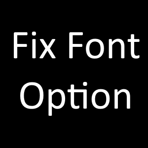

Mod List
This list may be a bit outdated, as I am constantly adding and removing texture replacent mods and Alternative Textures Packs. If you see an altered texture in my game that you can't find here, just ask and I'll be happy to let you know what mod changes it!
GAMEPLAY
Essentials

SMAPI - Stardew Modding API
https://smapi.io/

Alternative Textures

Content Patcher

Generic Mod Config Menu

Fashion Sense

Fix Font Option
- see Lynnea's UI for the settings I use
Gameplay Tweaks

Better Truffles

Experience Bars

Experience Updates

Ladder Locator

Prismatic Butterfly Location

Simple Crop Label
VISUALS
UI


Texture Replacements and Recolors

Bog's Elk Spirit Horse and Stable

Bog's Haunted Barn and Barn Animals
- Ghost Animals and Animal Products are disabled

Bog's Haunted Coop and Coop Animals
- Ghost Animals and Animal Products are disabled

Bog's Moon Gate Obelisks

Bog's Mossy Paths

Bog's Trinkets Retexture

Bog's Seasonal Witchy Farm House

Bog's Witchy Fences

Bog's Witchy Silo

Bog's Witchy Weapons

DaisyNiko's Earthy Interiors
DaisyNiko's Earthy Interiors 1.6 Fix

DaisyNiko's Earthy Recolor

Elle's Cuter Barn Animals

Elle's Cuter Cats

Elle's Cuter Coop Animals

Elle's Cuter Dogs

Elle's Cuter Horses

Gwen's Medieval Buildings
- All buildings that Bog's mods replaces are disabled

Lynnea's recolor of Bog's Kitchen

Lynnea's recolor of Bog's Witchy Tools

Lynnea's Witchy and Purple Bobbers

Lynnea's Witchy and Purple Companions

Vanilla Tweaks - Aquarium Edition

Vanilla Tweaks - Caves Edition

Vanilla Tweaks - Farming Edition

Vanilla Tweaks - Producer Edition

Vanilla Tweaks - Warrior Edition

Glass Milk Bottles for Content Patcher

Kari's Delivery Service - A Seasonal Mailbox Mod

SD's Mushroom Dig Spot

Simple Foliage - Unofficial Update for 1.6

Tile Kitchen and Dining Set
Other

Alternative Textures Packs

Bog's Mushroom Trees

Bog's Witchy Sheds for Alternative Textures

Bog's Wizard Catalogue Recolor

Greenhouse Set

Greenhouse Wood Floors

Gwen's Cottagecore Fences for Earthy Recolor

Gwen's Craftables for Earthy Recolor

Gwen's Lamps for Earthy Recolor

Lynnea's recolor of Bog's Wizard Furniture Catalogue
- Manually turned into an AT pack

Molamole's Mailbox

Molamole's Mailbox

Nano's Garden Style Craftables

Nano's Retro Style Furniture

Nostalgic Old Furniture Collection

Nyang Cat Scarecrows

Pastel Foliage

QueenAcademe's Wizard Furniture Recolor

Rainbow Simple Foliage Mushroom Trees

Retro Butterfly Hutch

Seasonal Witchy-Gothic Inspired Windows

Soft's Frightpurr Kitty Scarecrows

Too Many Swatches - A Furnitre Recolor

Void's Weird Wonders - Simple Foliage Retexture
NPC Texture Replacements

Seasonal Outfits - Slightly Cuter Aesthetic
- Farmer's sprites replacements are disabled